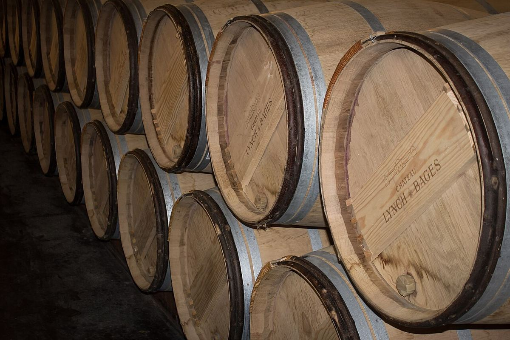

ROUGE
Cinquième grand cru classé de Pauillac, propriété de la famille Cazes depuis les années 1930 et connu pour un style généreux de cabernet sauvignon.

Château Lynch-Bages se trouve sur le plateau de Bages, aux portes de Pauillac. Son nom associe celui du lieu à celui de la famille Lynch, d’origine irlandaise, propriétaire du domaine pendant une bonne partie du XVIIIe siècle. Lors du classement de 1855, il fut classé cinquième grand cru.
Jean-Charles Cazes prit en main la propriété dans les années 1930 et elle appartient depuis à sa famille. Son petit-fils Jean-Michel Cazes engagea à partir des années 1970 la modernisation des chais et le rayonnement international du château ; la génération suivante le dirige aujourd’hui. La famille a aussi restauré le petit hameau de Bages, avec ses commerces et son restaurant.
Le vignoble, sur graves, est planté majoritairement de cabernet sauvignon, avec du merlot, du cabernet franc et du petit verdot. Outre le grand vin, le domaine produit le second vin Echo de Lynch-Bages et un blanc, Blanc de Lynch-Bages. De nouveaux chais ont été inaugurés en 2020.
Lynch-Bages est apprécié parce qu’il offre le caractère de Pauillac — fruits noirs, notes de cèdre et tanins fermes — dans un style généreux et à un niveau de qualité que beaucoup d’amateurs jugent supérieur à son rang officiel.
La famille Cazes possède aussi d’autres propriétés dans le Bordelais.
Il propose des visites de la propriété avec dégustation, sur réservation ; le hameau de Bages accueille commerces et restaurant.